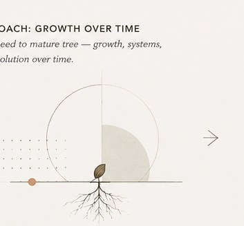
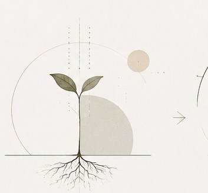
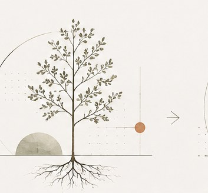
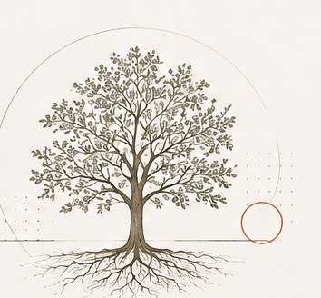

Approach
Thoughtful systems grow from understanding.
Growth over time
From seed to something that lasts.
I don't start with a tool or a predetermined answer. I start by understanding the environment around the problem—then build enough structure for a useful system to take root, grow, and evolve.
Good systems create clarity without eliminating judgment.

01 · Seed
Understand
Plant the seed through curiosity: listen, observe, map the current state, and define the problem worth solving.

02 · Sprout
Design
Shape the system with intention: connect insights, build structure, and test what a useful solution could look like.

03 · Young tree
Implement
Grow the system through collaboration: embed it into the work with documentation, enablement, and ownership.

04 · Mature tree
Improve
Nurture and evolve over time: measure, learn, refine, and strengthen the system for lasting value.